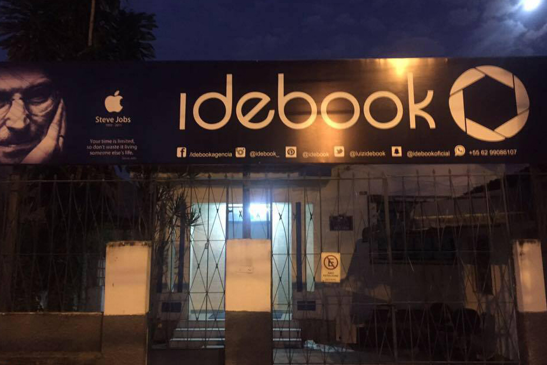
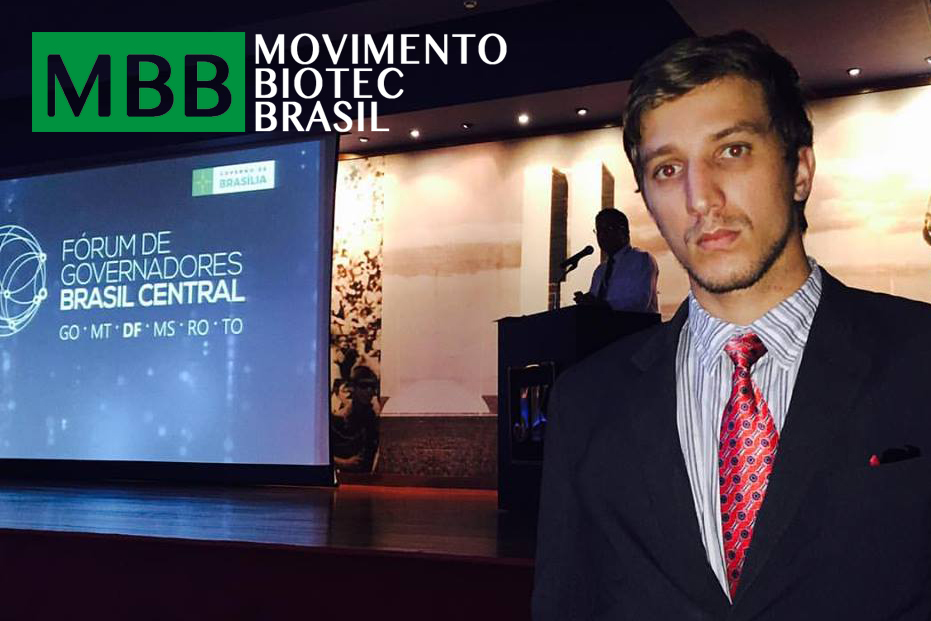
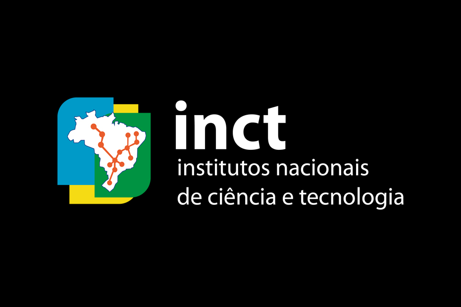
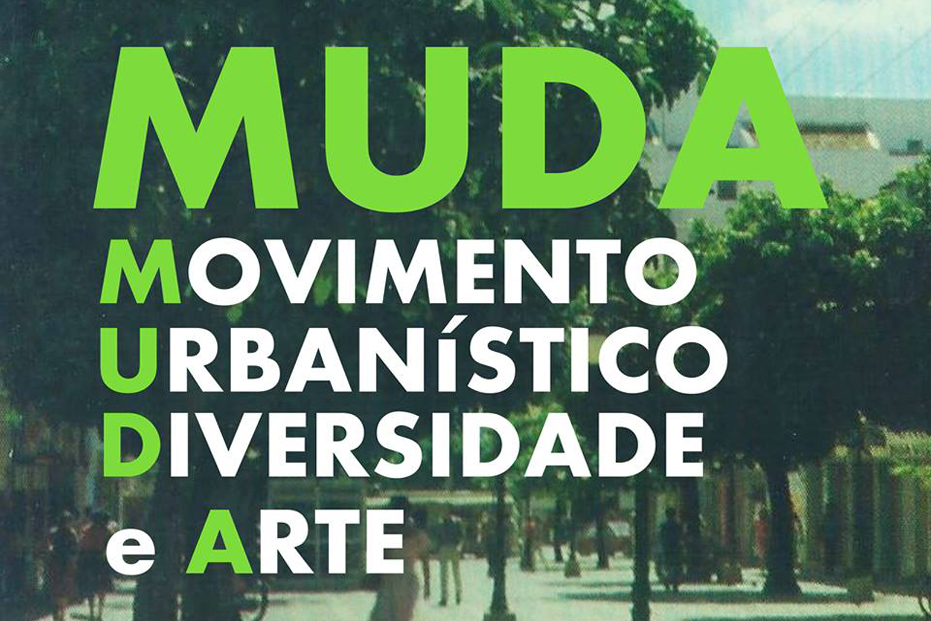
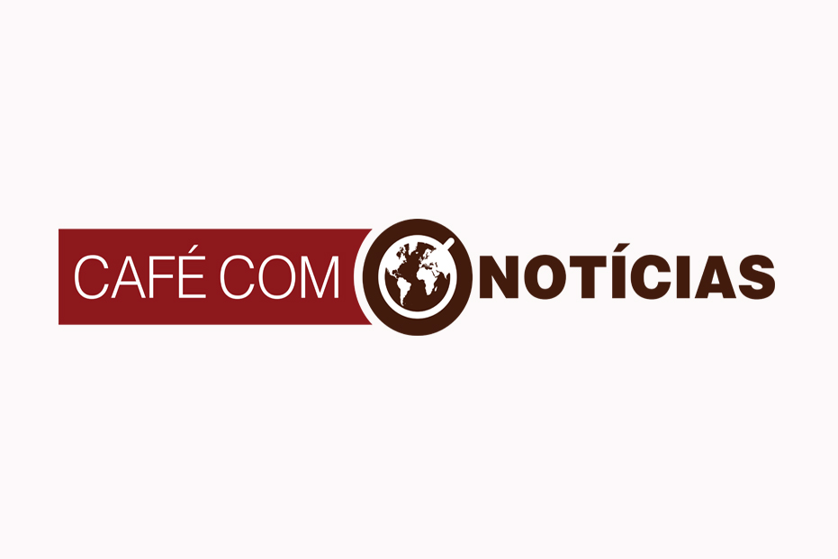
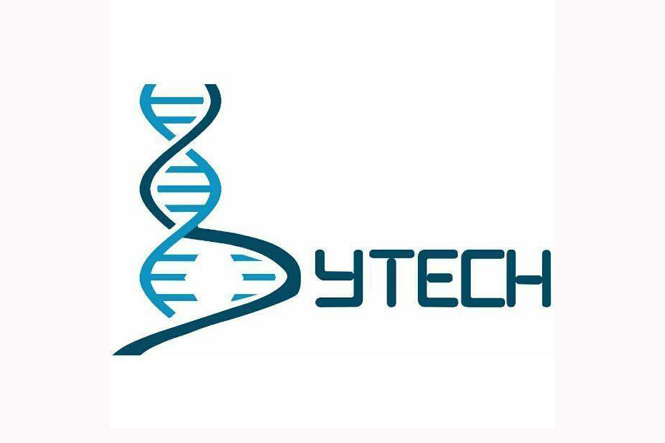
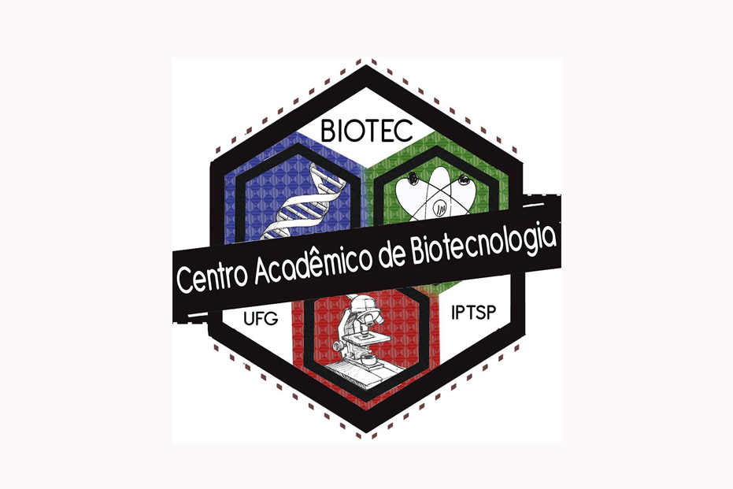
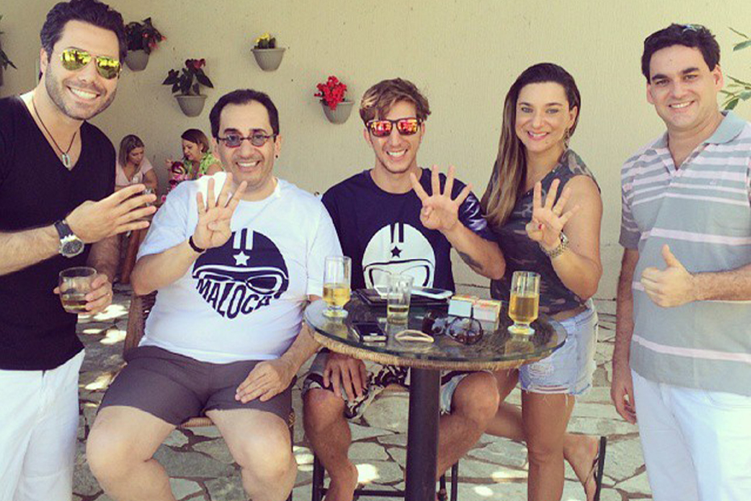

"Luiz Idebook é uma pessoa respeitada e admirada por ser visionário e determinado, não desvia dos desafios, pelo contrário, aceita e não poupa esforços para conseguir o que deseja e propõe. Solidário e muito justo com seus colegas e amigos, preocupa-se não só com seu próprio crescimento, mas com os de seus próximos. Sabe que sem luta não há vitória e, por isso, nunca foge à batalha!" - (Mini-Biografia feita por uma amiga). Atualmente, sou propietário da produtora Idebook, Coordenador Nacional do (MBB) - Movimento Biotecnologia Brasil, Fundador e Diretor de Marketing do (MUDA) - Movimento Urbanístico Diversidade e Arte, Coordenador de Mídias do Programa (CCN) Café com Notícias e Conselheiro da Liga Nacional dos estudantes de Biotecnologia.
CARGO: CEO e Fundador
CARGO: Coordenador Nacional
CARGO: Co-Fundador e Diretor de Marketing
CARGO: Coordenador De Mídias Sociais
CARGO: Conselheiro
Universidade Federal de Goiás
4 anos de Curso
Biotechnology Business, Law, and Science - UDEMY
Fast MBA - Empreendedorismo, Negócios e Startups na Prática. - UDEMY
Sei Planejar - SEBRAE
APF - Análise e Planejamento Financeiro - SEBRAE
Introdução ao Javascript - Fundação Bradesco
GQVE - Gestão da Qualidade: Visão Estratégica - SEBRAE
HTML - Básico - Fundação Bradesco
HTML - Avançado - Fundação Bradesco
The Complete Facebook Marketing 2017 - UDEMY
Facebook Ads & Instagram Ads 2017 - UDEMY
MEI - Microempreendedor Individual - SEBRAE
Bioinformática com Biopython - UDEMY
Desenvolvimento iOS 10 - UDEMY
Desenvolvimento Web - UDEMY
Desenvolvimento Android - UDEMY
Técnicas de produção de livros digitais - UDEMY.
Biotecnologia
Marketing Digital
Empreendedorismo

IDEBOOK

MOVIMENTO BIOTECNLOGIA BRASIL

INSTITUTO NACIONAL DE C & T EM NANOBIOTECNOLOGIA

MUDA


BYTECHNOLOGY JÚNIOR

CENTRO ACADÊMICO DE BIOTECNOLOGIA

Eleições 2014
Coordenador de Mídias da campanha do candidato a Deputado Federal o jornalista JORGE KAJURU, apresentador que já passou por emissoras como SBT, BAND, REDETV! e Esporte Interativo. Kajuru recebeu mais de 106 mil votos.
Criado por IDEBOOK LTDA